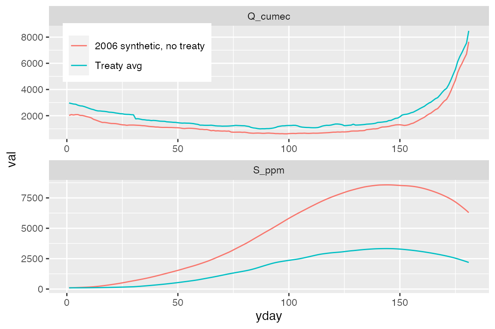

simulate-salinity.Rmd
library(deltasalinity)The salinity model is written as the time derivative of salinity concentration, \(C\) [ppm]:
\[\frac{dC}{dt}=-aQ_H (C-C_U)+be^{-dQ_H}(C_D-C)\] where \(C_U\) is (small) upstream salinity, \(C_D\) = 35 ppt is downstream (ocean) salinity and parameters \(a\), \(b\), and \(d\) are calibration constants, and \(Q_H\) is upstream flow, in this case flow at Hardinge Bridge. The two terms on the right-hand side of the equation represent advection and first order exchange, respectively. The exchange term \(be^{-dQ_H}\) decreases (or increases) with higher (or lower) streamflow as the channel becomes dominated by inflow (or tidal oscillations). Please note that this model assumes well mixed channels within the delta. Of course this is not a realistic assumption and there will likely be nonlinear salinity gradients moving downstream. The nonlinearity of the model may account for this when appropriately calibrated, but make sure to test the model to ensure it sufficiently approximates salinity at the location(s) of interest.
The salinity model is contained within the function sim_salin, which requires the following paramers:
Q_ts: Daily streamflow timeseriesv: The log of parameter variables for the model in a vector: v = c(log(a), log(b), log(d), log(C_d)). Note that they are written as log values for convenience in calibration (which ensures they are positive). The parameters are therefore calculated as
a = exp(v[1])b = exp(v[2])d = exp(v[3])C_d = exp(v[4])salin_min: Minimum channel salinityThe function is called for a single timeseries as: sim_salin(Q_ts,v,salin_min=100).
The sim_salin function is fairly straightforward, but in practice it can be tricky to implement. Thi spackage also includes a wrapper function sim_salin_annual which runs sim_salin for each year. The sim_salin_annual function simulates each year separately, so that \(C\) is always initialized as 100 ppm on January 1.
The following built in data contain streamflow timeseries and calibrated parameters:
ganges_salinity includes mean daily streamflow at Hardinge bridge since the treaty was signed, as well as synthetic salinity in 2006, generated under the counterfactual scenario that the treaty had not been signed (see Penny et al., 2020)ganges_params contains parameters for the model, calibrated to observed salinity at Khulna station in the Ganges delta for available data since 1990 (again, see Penny et al., 2020).Below, these data are loaded and used to simulate salinity.
# Load libraries: the functions require dplyr, tidyr, and deSolve. read_csv requires readr
library(dplyr)
library(tidyr)
library(ggplot2) # loads dplyr, tidyr, and readr
library(deSolve)
# Load the data
v <- ganges_params
print(v)
#> var param
#> 1 log(a) -12.560625
#> 2 log(b) -4.207450
#> 3 log(d) -6.187243
#> 4 log(C_d) 10.463103
streamflow_df <- ganges_streamflow
print(streamflow_df)
#> # A tibble: 362 x 5
#> year date yday Q_cumec group
#> <dbl> <date> <dbl> <dbl> <chr>
#> 1 1 1998-01-01 1 2970. Treaty avg
#> 2 1 1998-01-02 2 2930. Treaty avg
#> 3 1 1998-01-03 3 2891. Treaty avg
#> 4 1 1998-01-04 4 2874. Treaty avg
#> 5 1 1998-01-05 5 2799. Treaty avg
#> 6 1 1998-01-06 6 2752. Treaty avg
#> 7 1 1998-01-07 7 2737. Treaty avg
#> 8 1 1998-01-08 8 2688. Treaty avg
#> 9 1 1998-01-09 9 2626. Treaty avg
#> 10 1 1998-01-10 10 2563. Treaty avg
#> # … with 352 more rows
# Simulate salinity annually
salinity_results <- sim_salin_annual(streamflow_df, v$param)The tabulated results are (print(results)):
salinity_results
#> # A tibble: 362 x 3
#> date Q_cumec S_ppm
#> <date> <dbl> <dbl>
#> 1 1998-01-01 2970. 100
#> 2 1998-01-02 2930. 100.
#> 3 1998-01-03 2891. 101.
#> 4 1998-01-04 2874. 101.
#> 5 1998-01-05 2799. 102.
#> 6 1998-01-06 2752. 102.
#> 7 1998-01-07 2737. 103.
#> 8 1998-01-08 2688. 104.
#> 9 1998-01-09 2626. 106.
#> 10 1998-01-10 2563. 107.
#> # … with 352 more rowsThe results plotted:
# Combine results with streamflow data frame for plotting
results_df <- streamflow_df %>%
dplyr::left_join(salinity_results[,c("date","S_ppm")],by = "date")
# Plot the results
p_results <- ggplot(results_df %>% gather(var,val,Q_cumec,S_ppm)) +
geom_line(aes(yday,val, color = group)) +
facet_wrap(~var,ncol=1,scales="free") +
theme(legend.position = c(0.2,0.9),legend.title = element_blank())
print(p_results)
The model can also be calibrated using functions in this package. See ?calibrate_salinity_model for more details.